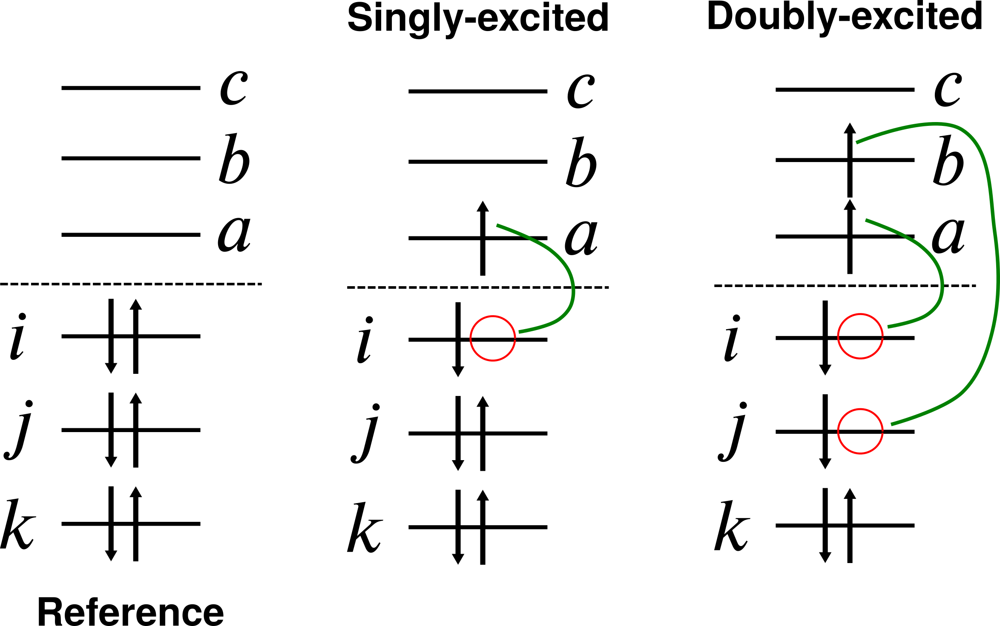
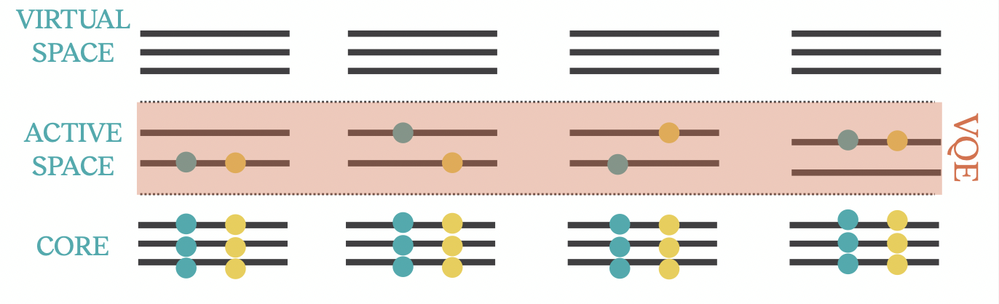

Tutorial - Adaptive State Preparation Techniques
Active space methods in quantum chemistry
Most quantum chemistry simulations assume that a single Slater determinant (the reference) gives a qualitatively accurate description of the electronic structure of the system. When such as assumption is correct, going beyond a qualitative description can be achieved by adding further Slater determinants. These additional Slater determinants are built systematically by exciting simultaneously one, two, or more electrons from the occupied to the unoccupied (or virtual) molecular orbitals, i.e. the optimized one-electron basis functions.
Including all possible excitation ranks from/to all possible orbitals generates the full configuration interaction (FCI) wavefunction, which is the exact ground state for the given molecular Hamiltonian in the given atomic orbital basis. Clearly, inclusion of all Slater determinants scales exponentially and is feasible only for quite small systems.
However, it’s usually not necessary to resort to FCI. This is because a better qualitative description can be obtained by correlating a subset only of orbitals and electrons, leading to so-called active space methods.
The complete active space (CAS) family of methods is the most common. The user selects, usually guided by chemical intuition, relevant subsets of \(N\) electrons and \(M\) orbitals to correlate. In the jargon, this is a CAS(\(N\),\(M\)) calculation. The wavefunction expansion is constructed as a linear combination of all determinants which include all possible excitations within the selected subspace. Further, if the one-particle basis is optimized simultaneously with the expansion coefficients, the methods is called complete active space self-consistent field (CASSCF). Otherwise, it is called complete active space configuration interaction (CASCI).
Adaptive state preparation
The previous example for \(H_2\) started from an a priori fixed structure of the wavefunction ansatz, leaving parameters free for optimization through the joing work of quantum and classical subroutines. While a fixed ansatz structure gives us the tools to bound the requirements on the quantum hardware, both in terms of number of qubits and circuit depth, it might suffer from lack of flexibility and make it difficult to optimize the free parameters in a reasonable number of steps.
The key feature of ADAPT-VQE is that the circuit is built adaptively for the problem at hand, instead of having a fixed ansatz structure.
At iteration \(n\), the ansatz construction step in ADAPT-VQE adds a unitary operator \(e^{\theta_i P_i}\) to the current circuit \(| \psi^{(n-1)} (\vec{\theta}^{(n-1)}) \rangle\), so that the resulting circuit prepares the state:
where \(\vec{\theta}^{(n)}\) indicates the set of \(n\) parameters in the ansatz at iteration \(n\).
The operator \(P_i\) is chosen from a pool of operators that is defined beforehand. To determine which element should be chosen from the pool, one needs to perform a series of measurements for each of them, which results in the measurement overhead mentioned in the lecture.
Once the operator is added, the new variational circuit,
where \(| \psi^{(0)} \rangle\) is an initial reference state (usually the Hartree-Fock state), is variationally optimised with respect to the set of parameters \(\vec{\theta}^{(n)}\).
For more theory, refer to the following articles:
Original ADAPT: https://www.nature.com/articles/s41467-019-10988-2
q-ADAPT: https://link.aps.org/doi/10.1103/PRXQuantum.2.020310
QEB: https://arxiv.org/abs/2011.10540
AIM-ADAPT: https://arxiv.org/abs/2212.09719
In the following, we will use aurora, the codebase we’re developing at Algorithmiq, to run various flavors of VQE routines.
The aurora codebase uses Python logging to output information during execution. So the first step is to set the logging levels to obtain a reasonable amount of output to understand what is going on.
import logging
logging.basicConfig(
format="%(asctime)s:%(filename)s:%(levelname)s:%(message)s", level=logging.WARNING
)
logger = logging.getLogger("aurora")
logger.setLevel(logging.INFO)
We also need to import relevant modules and functions
from aurora.chemistry.eos.eos_pyscf import EOSpyscf as eos
from aurora.chemistry.eos.utils import get_qiskit_esp
from aurora.utils import from_qiskit_operator, to_qiskit_operator
Select molecule and obtain fermionic hamiltonian
First we need to choose the molecule and get Hamiltonian. The fermionic hamiltonian is
where \(a_p^{\dagger}\) and \(a_p\) are the fermionic creation and annihilation operators, \( h_{p q}\) and \(h_{p q r s}\) are one- and two-electron integrals, and \(p,q,r\) and \(s\) are spin-orbital indices. The Hamiltonian can be obtained trough the EOS package in Aurora as shown in the next cell.
The following function encodes data for a few example molecules.
def get_molecule(
molecule_name: str = "H4", basis: str = "sto3g"
) -> tuple[eos, tuple[int, int], int, int]:
match molecule_name:
case "H2":
bond_distance = 0.75
mymol = eos(
atoms=f"H 0 0 0; H 0 0 {bond_distance}",
basis=basis,
charge=0,
spin=0,
)
num_particles = (1, 1)
num_active_orbitals = 2
num_inactive_orbitals = 0
case "H4":
bond_distance = 1.5
mymol = eos(
atoms=f"H 0 0 0; H 0 0 {bond_distance}; H 0 0 {bond_distance*2}; H 0 0 {bond_distance*3}",
basis=basis,
charge=0,
spin=0,
)
num_particles = (2, 2)
num_active_orbitals = 4
num_inactive_orbitals = 0
case "H4-square":
bond_distance = 2.0
mymol = eos(
atoms=f"H 0 0 0; H 0 0 {bond_distance}; H 0 {bond_distance} {bond_distance}; H 0 {bond_distance} 0",
basis=basis,
charge=0,
spin=0,
)
num_particles = (2, 2)
num_active_orbitals = 4
num_inactive_orbitals = 0
case "H5":
bond_distance = 1.5
mymol = eos(
atoms=f"H 0 0 0; H 0 0 {bond_distance}; H 0 0 {bond_distance*2}; H 0 0 {bond_distance*3}; H 0 0 {bond_distance*4}",
basis=basis,
charge=0,
spin=1,
)
num_particles = (3, 2)
num_active_orbitals = 5
num_inactive_orbitals = 0
case "LiH":
bond_distance = 1.5
mymol = eos(
atoms=f"Li 0 0 0; H 0 0 {bond_distance}", basis=basis, charge=0, spin=0
)
num_particles = (2, 2)
num_active_orbitals = 5
num_inactive_orbitals = 0
case _:
raise ValueError(f"Molecule {molecule_name} unrecognized.")
return mymol, num_particles, num_active_orbitals, num_inactive_orbitals
We can just call it with the desired molecule_name. The function will run a calculation to obtain the reference single determinant and the molecular integrals in the corresponding molecular orbital basis.
mymol, num_particles, num_active_orbitals, num_inactive_orbitals = get_molecule(
"H4", "sto3g"
)
# Setup Hartree-Fock problem and run it
mymol.set_scf()
# Get SCF object
myscf = mymol.get_scf()
logger.info("Electronic energy: %s", myscf.energy_elec())
logger.info("Hartree-Fock occupation numbers: %s", myscf.mo_occ)
# Setup CAS problem and run it
mymol.set_cas(
myscf,
nisht=num_inactive_orbitals,
nasht=num_active_orbitals,
nalpha=num_particles[0],
nbeta=num_particles[1],
optimize_orbitals=False,
)
# Run CAS object
mycas = mymol.run_cas()
prob = get_qiskit_esp(
mymol.get_active_h1(),
mymol.get_active_h2(),
myscf.energy_elec(),
num_active_orbitals,
sum(num_particles),
)
# Get fermionic hamiltonian
qc_ham_qiskit = prob.hamiltonian.second_q_op()
# Get the exact electronic energy
exact_energy = mymol.get_etot() - mymol.get_ecore()
logger.info("Exact energy: %20.14f", exact_energy)
Choose a qubit converter and map the fermionic Hamiltonian to qubit space
Once we have obtained the fermionic Hamiltonian, we need to transform it to qubit space. The fermion to qubit (F2Q) mapping is not unique and you can explore different options.
from qiskit_nature.second_q.mappers import (
JordanWignerMapper,
QubitConverter,
BravyiKitaevMapper,
)
from aurora.mappers.neven import NevenMapper
# Mapper options: JordanWignerMapper(), BravyiKitaevMapper(), ParityMapper(), NevenMapper()
qubit_converter = QubitConverter(mapper=JordanWignerMapper())
# Convert fermionic Hamiltonian to qubit space
hamiltonian_qiskit = qubit_converter.convert(qc_ham_qiskit, num_particles=num_particles)
num_qubits = hamiltonian_qiskit.num_qubits
logger.info("Number of qubits: %d", num_qubits)
# Transform Qiskit operator into an Aurora operator (dictionary)
hamiltonian = from_qiskit_operator(hamiltonian_qiskit)
Initialise additional operators
It is possible to consider additional operators in the VQE routines. These are usually added as penalty terms to the Hamiltonian:
such that we can constrain the state to, approximately, be an eigenfunction of the \(\hat{O}_i\) operators with prescribed eigenvalue \(o_i\). This is useful to enforce a given total spin or number of particles. Our ADAPT-VQE class can also simply measure them at each step, to monitor their value during the VQE routine.
from aurora.state.operators import spin2_error_operator, number_error_operator
# Set correct spin-2 and particle number values
spin2_value = 0 # s(s+1)
number_value = 4 # sum(num_particles)
spin_penalty = spin2_error_operator(
num_qubits=num_qubits,
spin2_value=spin2_value,
qubit_converter=qubit_converter,
num_particles=num_particles,
)
num_penalty = number_error_operator(
num_qubits=num_qubits,
number_value=number_value,
qubit_converter=qubit_converter,
num_particles=num_particles,
)
Choose an operator pool
At each iteration, ADAPT-VQE will measure the gradient of the objective function with respect to all operators in the chosen operator pool and add to the Ansatz the operator with largest gradient.
The original ADAPT pool consists of spin-complemented fermionic single and double excitations as follows:
where \(\hat{\tau}_p^q = a_q^{\dagger} a_p-a_p^{\dagger} a_q\) and \(\hat{\tau}_{r s}^{p q} = a_p^{\dagger} a_q^{\dagger} a_r a_s-a_s^{\dagger} a_r^{\dagger} a_q a_p\) and \(\alpha\) and \(\beta\) indices indicate the spin orientation of the spin-orbital. Spin-complemented operators conserve particle number and spin symmetries, although Trotterisation of the operators can break spin symmetry.
A spin-dependent version of the fermionic pool is following:
This pool conserves \(S_z\) and \(N\) symmetries but can break the \(S^2\) symmetry.
A Qubit Excitation Based (QEB) pool is a fermionic pool in Jordan-Wigner mapping where the Z-string (that keep track of fermionic anti-symmetries) are removed. It is a more hardware efficient pool for all-to-all connectivity devices, but the Z-string removal does have an increasing effect on the convergence.
A q-ADAPT pool is formed by mapping a spin-dependent fermionic pool (or QEB pool) into qubit space, \(\tau \mapsto \sum_k c_k S_k\), with \(\tau \in \mathcal{P}\) and \(S_k \in \{ \mathbb{I}, X, Y, Z \}^{\otimes N}\), and splitting the resulting operators into separate terms. This creates the qubit-ADAPT pool, defined in qubits space in terms of the operators \(P_k = i S_k\). q-ADAPT pool breaks particle number and spin symmetries.
from aurora.state.operators import get_operator_pool
We can test the following operator pools: 'fermionic', 'fermionic_spin', 'QEB', 'q-ADAPT'.
operator_pool = get_operator_pool(
operator_type="q-ADAPT", # Set the operator type here
num_qubits=num_qubits,
qubit_converter=qubit_converter,
)
logger.info("Num operators: %d", len(operator_pool))
Print elements from the operator pool. Each element is a tuple where the 1st element is the operator, represented as a linear combination of Pauli strings, and the 2nd is the corresponding gate.
operator_pool[25]
Initialize Ansatz
We need to select an initial state for the ADAPT-VQE procedure, similarly to what was done for the \(H_2\) example with a fixed Ansatz. The common thing to do is to start from the Hartree-Fock reference determinant.
from aurora.state.utils import estimate_operator_exact
from aurora.state.constructors import hartree_fock_ansatz
from aurora.state.converters.qiskit_converter import (
ansatz_to_qiskit_circuit,
)
Once again, the circuit corresponding to the initial state will depend on the F2Q mapper used.
# Initialize in HF state
ansatz = hartree_fock_ansatz(
num_spatial_orbitals=num_qubits // 2,
num_particles=num_particles,
mapper=JordanWignerMapper(), # BravyiKitaevMapper(), ParityMapper(), NevenMapper()
)
# Measure HF energy
logger.info("Initial energy: %s", estimate_operator_exact(ansatz, hamiltonian))
Transpile and draw ansatz
The generated ansatz has to be transpiled to a circuit, before being executated on quantum hardware or a simulator.
from aurora.state.custom_transpilers import qiskit_transpiler
At any point, you can draw the resulting circuit to inspect which gates have been added at each step of the ADAPT procedure.
transpiler = qiskit_transpiler()
ansatz_to_qiskit_circuit(transpiler.transpile(ansatz)).draw("mpl")
Choose optimizer method and optimizer object
The quantum subroutine is complemented by classical optimization to update the free parameters in the circuit gates. In principle, any classical optimization method will do.
from qiskit.algorithms.optimizers import COBYLA, L_BFGS_B, SLSQP, SPSA, GradientDescent
from aurora.state.optimizers import (
OptimizerStatevector,
OptimizerPOVMs,
)
The classical optimizer will be used within an Optimizer object in aurora. This object will be responsible for “translating” the outcomes from the quantum hardware to values/gradients of the objective function, as understood by the classical optimization routine.
For example, when using statevector simulations, it is appropriate to use a classical optimization routine with an OptimizerStatevector object, which knows how to compute expectation values of the Hamiltonian and the gradients needed in ADAPT-VQE.
The OptimizerPOVMs object is appropriate when using informationally complete (IC) POVM measurements, either with a noisy simulator or with quantum hardware.
# Choose the method
optimizer_method = L_BFGS_B(maxfun=5000, options={"disp": False, "gtol": 1e-5})
# optimizer_method = "BFGS"
# optimizer_method = COBYLA(maxiter=1000, disp=True)
# optimizer_method = SPSA()
# optimizer_method = GradientDescent(maxiter=10)
# Choose the object
optimizer = OptimizerStatevector(optimizer=optimizer_method)
# optimizer = OptimizerPOVMs(optimizer=optimizer_method)
Initialize the ADAPT-VQE class
We’re now finally ready to initialize the ADAPT-VQE class, which is called RiemannianFlow. The class can handle either statevector simulations or IC-POVM quantum measurements.
from aurora.state.constructors import RiemannianFlow
from aurora.measurement.estimator.local_povm_estimator import LocalPOVMEstimator
from aurora.measurement.povm.local_dilation_povm import LocalDilationPOVM
from aurora.measurement.povm.joint_povm import JointPOVM
import numpy as np
Initialize JointPOVM if working with measurements
povm_list = JointPOVM(LocalDilationPOVM(), num_qubits=num_qubits)
estimator = LocalPOVMEstimator(np.array([povm.effects for povm in povm_list]))
Choose statevector or POVM measurements. Input JointPOVM and Estimator if POVMs are used.
# Initialise RiemannianFlow object. Choose measurement type and pass POVMs and Estimator if working with measurements
riemannian_flow = RiemannianFlow(
ansatz=ansatz,
hamiltonian=hamiltonian,
operator_pool=operator_pool,
additional_operators=[spin_penalty, num_penalty],
optimizer=optimizer,
measurement_type="statevector",
optimization_type="statevector",
# povm_list=povm_list,
# estimator=estimator,
)
Run ADAPT algorithm
The operator selection can be done in many ways. Ideally, the aim is to add gates that have maximum effect in taking the state towards the ground state of the system. A heuristic to this end is based on the gradient of the energy with respect to the parameter in the unitary generated by operator \(P_i\) when the parameter value is set to zero, which can be calculated by evaluating the commutator of \(P_i\) with the Hamiltonian,
Once the gradients for all the operators \(P_i\) in the pool have been obtained, the operator with the highest absolute value is added to the ansatz. This selection criterion is named "gradient".
Another alternative is to pick the operator that decreases the energy the most. This selection criterion is named "energy".
Running the cell will show a log of the ADAPT-VQE procedure and print the statevector at each iteration.
riemannian_flow.adaptively_add_gates(
max_iters=100, # Max iterations before terminating
gates_per_iteration=1, # Gates added per iteration
optimization_frequency=1, # How many iterations before optimizing
selection_criterion="gradient", # You can choose 'gradient' or 'energy' for operator selection criterion
abort_threshold=1e-5, # Abort when total gradient of operator pool below this
reference_abort_threshold=1e-3, # Abort when this close to reference value
reference_value=exact_energy, # The reference value for aborting
# shots = 2000000, # Shots for executions with povms
print_statevector=True, # Print statevector
)
We can plot the final generated circuit, as we did for the initial state.
transpiler = qiskit_transpiler()
ansatz_to_qiskit_circuit(transpiler.transpile(ansatz)).draw("mpl")
Plot stats from simulation
import matplotlib.pyplot as plt
import numpy as np
Energy vs iterations
plt.plot(np.real(riemannian_flow.energies), label=operator_pool.operator_type)
plt.axhline(exact_energy, color="gray", linestyle="dashed")
plt.ylabel("Energy")
plt.xlabel("Iterations")
plt.title(mymol.atoms)
plt.grid(color="grey")
plt.legend()
plt.show()
Error to exact energy vs iterations in log plot
plt.plot(
np.abs(riemannian_flow.energies - exact_energy), label=operator_pool.operator_type
)
plt.yscale("log")
plt.ylim(bottom=1e-4)
plt.ylabel("Error")
plt.xlabel("Iterations")
plt.title(mymol.atoms)
plt.grid("grey")
plt.legend()
plt.show()
Error vs CNOT count
plt.plot(
riemannian_flow.cnot_counts[0],
np.abs(riemannian_flow.energies - exact_energy),
label=operator_pool.operator_type,
)
plt.yscale("log")
plt.ylim(bottom=1e-4)
plt.ylabel("Error")
plt.xlabel("CNOTs")
plt.title(mymol.atoms)
plt.grid("grey")
plt.legend()
plt.show()
First penalty term (spin-2 error) vs iterations
plt.plot(
riemannian_flow.additional_operator_estimations[0],
label=operator_pool.operator_type,
)
plt.ylabel("Spin Error")
plt.xlabel("Iterations")
plt.title(mymol.atoms)
plt.grid("grey")
plt.legend()
plt.show()
Second penalty term (number error) vs iterations
plt.plot(
riemannian_flow.additional_operator_estimations[1],
label=operator_pool.operator_type,
)
plt.ylabel("Number Error")
plt.xlabel("Iterations")
plt.title(mymol.atoms)
plt.grid("grey")
plt.legend()
plt.show()